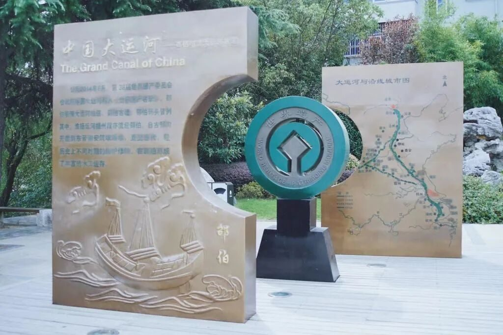
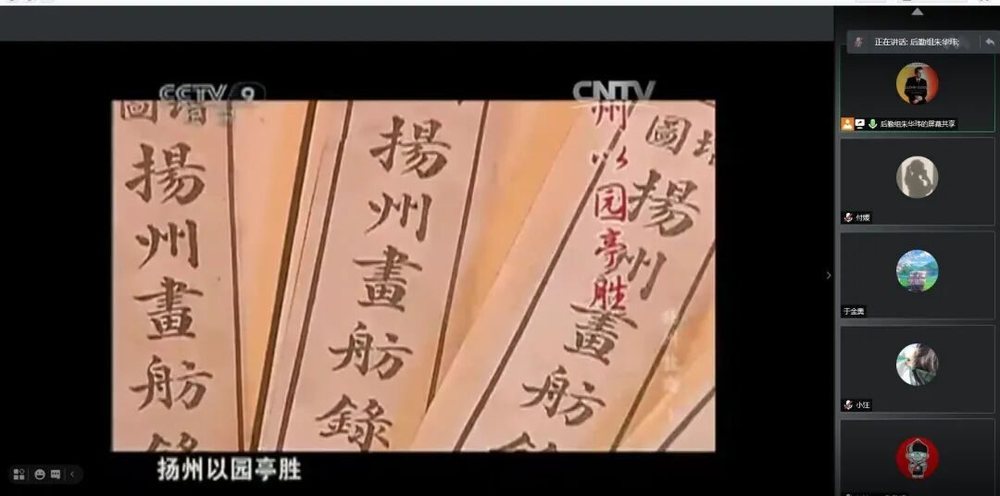
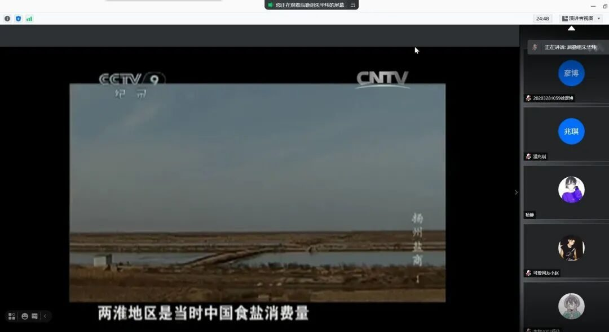

【行者无疆 寓绻淮扬】 盛一叶文化之韵，赠予运河

九万里风鹏正举，传唱历史吾辈之责。
两千年滔滔江水，天工地斧运河之作。第三期线上调研的主题是扬州的历史文化和大运河文化。由于大运河连通了南北交通，使得南北方的经济连为一体，大量的财富也因此滚滚而来，带动了历史底蕴深厚的淮扬之地的经济发展。实践团的成员一起在线上回顾这一段繁荣辉煌的历史。
扬州，是唐代诗人徐凝笔下的“天下三分明月夜，二分无赖是扬州”，是南宋诗人姜夔口中的“淮左名都，竹西佳处”，是北宋词人秦观赞誉的“游人若论登临美，须作淮东第一观”
一座拥有两千五百年历史的城市，悠久深厚的历史为扬州积淀了丰厚而独特的文化底蕴。许多诗人在此写下千古名句，欧阳修的《和原父扬州六题》中总有一句诗让你信手拈来，这位文章太守知扬州一年，也为这座历史文化名城增添了浓墨重彩的一笔。
几千年来，他曲折蜿蜒于华夏大地上，他背后源远流长的文化恰如他奔流不息的河水，他背负着历史无数人民的血汗，承担起水运之核的重任，他就是贯穿南北的大运河，是中国历史上永远不朽的大运河。


冷动力时代，最便捷的运输方式就是水运，这样的大动脉，向中枢源源不断地提供血液。“万艘龙舸绿丝间，载到扬州尽不还”，他孕育着生命之源，连通了南北的繁荣昌盛，流水不止，文化不息。京杭大运河如今仍然作为我国重要的水运枢纽流动着，同时，在文化方面形成了兼容并蓄、包容多样的运河文化体系，已然成为一种精神象征。
扬州的钟灵毓秀深深地吸引着实践团每一位成员，即使隔着屏幕，即使距离很远，成员们依然热情不减，积极地分享着自己的心得。字里行间藏不住想要探索扬州文化的渴望，不难看出成员们对明天的调研也已经迫不及待了。